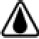

9 Tätigkeitsübergreifende gefährdungsbezogene Regeln
9.1 Gefährliche explosionsfähige Atmosphäre
Brennbare Gase und Dämpfe können mit der Raumluft vermischt explosionsfähige Gemische bilden. Diese Gase und Dämpfe müssen durch geeignete Lüftung entfernt werden.
Liegt zum Beispiel die maximale Verarbeitungstemperatur über dem unteren Explosionspunkt (UEP) einer Flüssigkeit, können explosionsfähige Dampf/Luft-Gemische vorhanden sein. Sofern der jeweilige UEP nicht bekannt ist, kann er in den folgenden beiden Fällen wie dargestellt abgeschätzt werden:
- bei reinen, nicht halogenierten Flüssigkeiten 5 K unter dem Flammpunkt
- bei Lösemittel-Gemischen ohne halogenierte Komponente 15 K unter dem Flammpunkt
Werden Flüssigkeiten allerdings in Tröpfchen verteilt, zum Beispiel versprüht, ist auch bei Temperaturen unterhalb des unteren Explosionspunkts (UEP) mit der Bildung von explosionsfähiger Atmosphäre zu rechnen. Bei Nebeln können sich wegen des Dampfdrucks der Flüssigkeit bei höheren Temperaturen die gefährlichen Eigenschaften den Werten des Dampf/Luft-Gemischs annähern.
Bei den nachfolgend aufgeführten Arbeiten können schon bei normaler Raumtemperatur Dämpfe aus brennbaren Flüssigkeiten entstehen:
- Arbeiten am Kraftstoffsystem von Fahrzeugen
- Aufbewahren, Verschütten oder Reinigen von Teilen mit entzündbaren Flüssigkeiten, deren Flammpunkt nicht ausreichend über der Verarbeitungstemperatur liegt, zum Beispiel Ottokraftstoffe
Bei Fahrzeugen, die mit Flüssiggas (z. B. Propan, Butan) oder verflüssigtem Erdgas (LNG) angetrieben werden, besteht die Gefahr, dass brennbares Gas durch Undichtheit austritt.
Die brennbaren Gase Wasserstoff, Ethylen, Acetylen, und Kohlenmonoxid sowie Methan sind leichter als Luft und können sich im Deckenbereich sammeln.
Alle anderen brennbaren Gase sowie die Dämpfe entzündbarer Flüssigkeiten und Flüssiggas sind schwerer als Luft und sammeln sich an den tiefsten Stellen, zum Beispiel in Arbeitsgruben, Unterfluranlagen und Kanälen.
Geeignete Lüftungsmaßnahmen siehe DGUV Regel 113-001 "Explosionsschutz-Regeln (EX-RL)" und DGUV Regel 109-002 "Arbeitsplatzlüftung – Lufttechnische Maßnahmen".
9.2 Brennbare Stoffe
9.2.1 Können die aus brennbaren Flüssigkeiten entstehenden Dämpfe mit der Raumluft explosionsfähige Gemische bilden, wenn sie versprüht oder verspritzt werden oder wenn die Verarbeitungstemperatur nicht ausreichend unter dem Flammpunkt liegt, sind besondere Maßnahmen erforderlich.
Das können besonders Lüftungsmaßnahmen sein (siehe auch Punkt 9.1).
Gemäß CLP-Verordnung können Flüssigkeiten aufgrund der Entzündbarkeit in die Gefahrenklasse "entzündbare Flüssigkeiten" der Kategorie 1, 2 oder 3 eingestuft werden.
Die Kategorie 3 beinhaltet die entzündbaren Flüssigkeiten mit einem Flammpunkt zwischen mindestens 23 °C und höchstens 60 °C. Sie werden mit dem Gefahrenpiktogramm «Flamme» (GHS02), dem Signalwort «Achtung» und dem H-Satz H226 gekennzeichnet.
Entzündbare Flüssigkeiten mit einem Flammpunkt zwischen 55 °C und 75 °C (z. B. Diesel) können im Sinne der CLP-Verordnung der Kategorie 3 zugeordnet werden.
Flüssigkeiten mit einem Flammpunkt von mehr als 35 °C und höchstens 60 °C müssen nicht in die Kategorie 3 eingestuft werden, wenn die Prüfung L.2 auf selbstunterhaltende Verbrennung nach den UN-Empfehlungen für die Beförderung gefährlicher Güter, Handbuch über Prüfungen und Kriterien, Teil III Abschnitt 32, negativ ausgefallen ist.
In der CLP-Verordnung gibt es zusätzlich die Gefahrenklasse und -kategorie "Aerosole, Kategorie 2" für entzündbare Aerosole.
9.2.2 Reinigungseinrichtungen oder Reinigungsarbeiten dürfen nur mit Stoffen/Gemischen betrieben oder ausgeführt werden, die gemäß Herstellervorgabe (z. B. Betriebsanleitung) und aufgrund der physikalischen und chemischen Eigenschaften dafür geeignet oder zugelassen sind, zum Beispiel Flammpunkt ausreichend über der Verarbeitungstemperatur.
Zur Beurteilung der Eignung sind die Informationen aus den Sicherheitsdatenblättern (besonders Abschnitt 9 "Physikalische und chemische Eigenschaften") heranzuziehen.
Weitere Hinweise sind der DGUV Information 209-088 "Reinigen von Werkstücken mit Reinigungsflüssigkeiten" zu entnehmen.
9.2.3 Reinigungsarbeiten dürfen nicht mit Flüssigkeiten, die giftig oder gesundheitsschädlich sind, ausgeführt werden.
Siehe Sicherheitsdatenblatt der Flüssigkeit und GESTIS-Stoffdatenbank, Institut für Arbeitsschutz der Deutschen Gesetzlichen Unfallversicherung (IFA).
9.2.4 Reinigungsarbeiten, bei denen der Flammpunkt der eingesetzten Stoffe/Gemische nicht ausreichend über der Verarbeitungstemperatur liegt, dürfen nur durchgeführt werden, wenn
- sie in Arbeitsbereichen durchgeführt werden, die die Vorgaben nach § 11 GefStoffV in Verbindung mit Anhang I der GefStoffV und der
DGUV Regel 113-001 "Explosionsschutz-Regeln (EX-RL) – Sammlung technischer Regeln für das Vermeiden der Gefahren durch explosionsfähige Atmosphäre mit Beispielsammlung zur Einteilung explosionsgefährdeter Bereiche in Zonen" erfüllen, oder
- sie aus betriebsspezifischen Gründen in anderen Arbeitsbereichen/an anderen Arbeitsplätzen erforderlich sind, allerdings nur, wenn die Unternehmerin oder der Unternehmer die Verwendung der Reinigungsmittel jeweils im Einzelfall angeordnet und geeignete Schutzmaßnahmen getroffen hat.
Zu geeigneten Schutzmaßnahmen zählt besonders die weitestmögliche Mengenreduzierung von Stoffen/Gemischen.
Zu Reinigungsarbeiten unter Verwendung brennbarer Flüssigkeiten, deren Flammpunkt nicht ausreichend über der Verarbeitungstemperatur liegt, dürfen Pinsel, an denen sich Metallteile befinden, nicht verwendet werden.
9.3 Brand- und Explosionsgefahren, Zündquellen
Arbeiten, bei denen der Flammpunkt der eingesetzten brennbaren Flüssigkeit nicht ausreichend über der Verarbeitungstemperatur liegt, dürfen nur unter Einhaltung des Punkts 9.1 durchgeführt werden. Zündquellen dürfen nicht vorhanden sein.
Derartige brennbare Flüssigkeiten sind zum Beispiel Ottokraftstoffe und Lösemittel.
Zündquellen können zum Beispiel sein: Zigarettenglut, Schweiß- oder Schleiffunken, offene Flamme, elektrostatische Entladungen, Funkenbildung durch elektrische Anlagen, Werkzeuge, Blitzschlag …
Siehe auch § 5 der BetrSichV in Verbindung mit § 2 der DGUV Vorschrift 1 "Grundsätze der Prävention" sowie Punkt 3.8 des Kapitels 2.26 der DGUV Regeln 100-500 und 100-501 "Betreiben von Arbeitsmitteln", DGUV Information 209-088 "Reinigen von Werkstücken mit Reinigungsflüssigkeiten" und DGUV Regel 113-001 "Explosionsschutz-Regeln (EX-RL)".
9.4 Elektrische Ausrüstung
9.4.1 Elektrische Anlagen und Betriebsmittel müssen den betrieblichen und örtlichen Sicherheitsanforderungen genügen.
Siehe §§ 3 und 4 der DGUV Vorschriften 3 und 4 "Elektrische Anlagen und Betriebsmittel" und DIN VDE 0100-410 "Errichten von Niederspannungsanlagen – Teil 4-41: Schutzmaßnahmen – Schutz gegen elektrischen Schlag".
Je nach Art der betrieblichen Beanspruchung, zum Beispiel durch Schlag, Stoß, Druck, Staub, Nässe, Wärme, aggressive Stoffe, für den Einsatz bei erhöhter elektrischer Gefährdung oder bei Einsatz in explosionsgefährdeter Umgebung ergeben sich bestimmte Anforderungen für Bau und Ausrüstung der elektrischen Anlagen und Betriebsmittel. Siehe Elfte Verordnung zum Produktsicherheitsgesetz (Explosionsschutzprodukteverordnung – 11. ProdSV) und nachgeordnete VDE-Bestimmungen.
Darüber hinaus sind noch die Bestimmungen des örtlich zuständigen Elektrizitätsversorgungsunternehmens (EVU) zu beachten. Sie schreiben zum Beispiel vor, welche Art der Maßnahme zum Schutz bei indirektem Berühren (Schutzisolierung, Schutzkleinspannung, Fehlerstrom-Schutzeinrichtung und Schutztrennung), welche Leitungsquerschnitte und welche Ausführungen der Installation erforderlich sind.
9.4.2 Leuchten müssen im Arbeits- und Verkehrsbereich gegen mechanische Beschädigungen geschützt sein und mindestens der Schutzart IP 54 nach DIN EN 60529/DIN VDE 0470 Teil 1 "Schutzarten durch Gehäuse (IP-Code)" entsprechen.
Leuchten in der Schutzart IP 54 sind gegen Berührung aktiver Teile mit Hilfsmitteln jeglicher Art sowie gegen Spritzwasser geschützt, gekennzeichnet mit 
.
Siehe auch DIN VDE 0713-3 "Zubehör für Leuchtröhrenanlagen über 1000 V; Leuchtröhrengeräte"
9.4.3 Arbeitsgruben und Unterfluranlagen, Waschanlagen und Gruben in Waschanlagen gelten als "feuchte und nasse Räume" im Sinne der VDE-Bestimmungen. Die elektrische Installation ist daher nach DIN VDE 0100-737 "Errichten von Niederspannungsanlagen – Feuchte und nasse Bereiche und Räume und Anlagen im Freien" auszuführen.
9.4.4 Handleuchten (auch Leuchten für Schutzkleinspannung) müssen nach DIN EN 60598-2-8 "Leuchten – Teil 2-8: Besondere Anforderungen – Handleuchten" mit Schutzglas und Schutzkorb versehen sein.
Anstelle des Schutzkorbs können vom Hersteller der Handleuchten auch andere bruchsichere Schutzeinrichtungen vorgesehen werden, sofern sie DIN EN 60598-2-8 "Leuchten – Teil 2-8: Besondere Anforderungen – Handleuchten" entsprechen.
9.4.5 In Bereichen mit ausreichender Bewegungsfreiheit in leitfähiger Umgebung müssen elektrische Anlagen und Betriebsmittel zusätzliche betriebliche und örtliche Sicherheitsanforderungen erfüllen.
Ein Bereich mit ausreichender Bewegungsfreiheit in leitfähiger Umgebung ist im Wesentlichen elektrisch leitfähig. Eine großflächige Berührung ist hier nicht zwingend gegeben.
Siehe DIN VDE 0100-410 "Errichten von Niederspannungsanlagen – Teil 4-41 Schutzmaßnahmen – Schutz gegen elektrischen Schlag" sowie DGUV Information 203-004 "Einsatz elektrischer Betriebsmittel bei erhöhter elektrischer Gefährdung".
Ortsfeste elektrische Betriebsmittel sind unter Anwendung der folgenden Maßnahmen zu betreiben:
- Schutzmaßnahmen nach DIN VDE 0100-410 "Errichten von Niederspannungsanlagen – Teil 4-41: Schutzmaßnahmen – Schutz gegen elektrischen Schlag"
- zusätzlicher Schutz durch Fehlerstromschutzeinrichtungen (RCD) nach DIN VDE 0100-410 "Errichten von Niederspannungsanlagen – Teil 4-41: Schutzmaßnahmen – Schutz gegen elektrischen Schlag" Punkt 415.1 (empfohlen)
- für Stromkreise mit Steckvorrichtungen In ≤ AC 32 A:
RCDs mit IΔn ≤ 30 mA vorsehen
Ortsveränderliche elektrische Betriebsmittel sind unter Anwendung einer der folgenden Maßnahmen zu betreiben:
- in geprüften elektrischen Anlagen: fest installierte RCDs mit IΔn ≤ 30 mA
- hinter geprüften Steckdosenstromkreisen ohne RCD: mobile Verteiler mit integrierten RCDs mit IΔn ≤ 30 mA
- hinter Steckdosen mit unbekannter Schutzmaßnahme:
- PRCD-S mit IΔn ≤ 30 mA nach VDE 0661-10 Beiblatt 1,
Abschnitt 3.2.3 (zur Schutzpegelerhöhung)
- Schutztrennung nach DIN VDE 0100-410 Abschnitt 413
- Schutzkleinspannung (SELV) nach DIN VDE 0100-410 Abschnitt 414; es dürfen nur Betriebsmittel der Schutzklasse III verwendet werden, die jedoch unabhängig von der Nennspannung mindestens der Schutzart IP 2X entsprechen müssen, d. h. isoliert oder fingersicher abgedeckt sind
9.4.6 In Bereichen mit erhöhter elektrischer Gefährdung müssen elektrische Anlagen und Betriebsmittel zusätzliche betriebliche und örtliche Sicherheitsanforderungen erfüllen.
Erhöhte elektrische Gefährdung ist gegeben, wenn elektrische Betriebsmittel in Bereichen mit begrenzter Bewegungsfreiheit in leitfähiger Umgebung betrieben werden.
Siehe DIN VDE 0100-410 "Errichten von Niederspannungsanlagen – Teil 4-41: Schutzmaßnahmen – Schutz gegen elektrischen Schlag" sowie DGUV Information 203-004 "Einsatz elektrischer Betriebsmittel bei erhöhter elektrischer Gefährdung".
Ortsfeste elektrische Betriebsmittel sind unter Anwendung einer der folgenden Maßnahmen zu betreiben:
- Schutz durch automatische Abschaltung der Stromversorgung nach DIN VDE 0100-410 Abschnitt 411. Für die automatische Abschaltung sind Fehlerstrom–Schutzeinrichtungen (RCDs) mit IΔn ≤ 30 mA zu verwenden.
- Schutztrennung mit nur einem Betriebsmittel
- Schutzkleinspannung (SELV)
Ortsveränderliche elektrische Betriebsmittel sind unter Anwendung einer der folgenden Maßnahmen zu betreiben:
- Schutztrennung nach DIN VDE 0100-410 Abschnitt 413. Dabei darf jeweils nur ein Betriebsmittel je Ausgangswicklung einer Spannungsquelle, z. B. Trenntransformator, angeschlossen werden. Die Wicklungen müssen galvanisch voneinander getrennt sein.
- Schutzkleinspannung (SELV) nach DIN VDE 0100-410 Abschnitt 414. Es dürfen nur Betriebsmittel der Schutzklasse III verwendet werden, die jedoch unabhängig von der Nennspannung mindestens der Schutzart IP 2X entsprechen müssen, d. h. isoliert oder fingersicher abgedeckt sind.
9.5 Einsatz von elektrischen Betriebsmitteln
9.5.1 Beim Einsatz von elektrischen Betriebsmitteln hat die Unternehmerin oder der Unternehmer dafür zu sorgen, dass die erforderlichen Maßnahmen zum Schutz von Personen gegen die Einwirkung von gefährlichen Körperströmen eingehalten werden.
Siehe §§ 3 und 4 der DGUV Vorschriften 3 und 4 "Elektrische Anlagen und Betriebsmittel" sowie DIN VDE 0100-410 "Errichten von Niederspannungsanlagen – Teil 441: Schutzmaßnahmen – Schutz gegen elektrischen Schlag" und DGUV Information 203-005 "Auswahl und Betrieb elektrischer Betriebsmittel nach Einsatzbedingungen".
Elektrische Betriebsmittel müssen folgende Mindestanforderungen erfüllen:
- Schutzart: IP 43, außer handgeführte Elektrowerkzeuge IP 2X
- Leitungen: H05RN-F oder H05BQ-F
9.5.2 Bei Arbeiten in Bereichen mit ausreichender Bewegungsfreiheit in leitfähiger Umgebung hat die Unternehmerin oder der Unternehmer dafür zu sorgen, dass die erforderlichen zusätzlichen Maßnahmen zum Schutz von Personen gegen die Einwirkung von gefährlichen Körperströmen eingehalten werden.
Siehe DIN VDE 0100-410 "Errichten von Niederspannungsanlagen – Teil 441: Schutzmaßnahmen – Schutz gegen elektrischen Schlag" sowie DGUV Information 203-004 "Einsatz elektrischer Betriebsmittel bei erhöhter elektrischer Gefährdung".
Leitungen
Bewegliche Leitungen (Ausnahme für Geräteanschlussleitungen siehe "Handgeführte elektrische Betriebsmittel" und "Handleuchten") müssen die Bauart H07RN-F oder H07BQ-F oder höherwertig haben (H07BQ-F ist nur eingeschränkt beständig gegenüber thermischer Einwirkung von außen, z. B. bei Schweißarbeiten).
Bei sehr hohen mechanischen Beanspruchungen, zum Beispiel im Bergbau oder Tunnelbau, sind nur Leitungen höherwertiger Bauart zu verwenden, z. B. NSSHÖU.
An Stellen, an denen Leitungen (z. B. Netzanschlussleitung, Schweißleitungen) mechanisch besonders beansprucht werden können, sind sie geschützt zu verlegen.
Leitungen gelten als geschützt verlegt, wenn sie zum Beispiel
- hochgehängt,
- in Kabelbrücken, in Schutzrohren oder unter vergleichbaren tragfähigen Konstruktionen verlegt sind.
Leitungsroller
Leitungsroller sind geeignet, wenn sie die Anforderungen nach Grundsatz GS-ET-35 "Grundsätze für die Prüfung und Zertifizierung von Leitungsrollern für Bau- und Montagestellen" erfüllen. Das bedeutet, dass sie nach DIN EN 61242 (VDE 0620-300) "Elektrisches Installationsmaterial – Leitungsroller für den Hausgebrauch und ähnliche Zwecke" oder DIN EN 61316 (VDE 0623-100) "Leitungsroller für industrielle Anwendung" gebaut sind und zusätzlich folgende Merkmale aufweisen:
- Ausführung in Schutzklasse II, d. h. schutzisoliertes Betriebsmittel mit doppelter oder verstärkter Isolierung, gekennzeichnet mit
- Ausrüstung mit einer Leitung gemäß den Anforderungen an Leitungen
- Ausführung des Tragegriffs, des Kurbelgriffs und des Wickelkörpers aus Isolierstoff oder vollständige Umhüllung dieser Teile mit Isolierstoff, um zu verhindern, dass durch eine beschädigte Leitung eine gefährliche Berührungsspannung an berührbaren Konstruktionsteilen anstehen kann.
- Ausrüstung mit Schutzkontakt-Steckvorrichtungen für erschwerte Bedingungen, gekennzeichnet mit
- mindestens Schutzart IP 44 (Kennzeichnung in Klartext oder Symbol)
- Eignung für Betrieb im Umgebungstemperaturbereich von –25 °C bis +40 °C
Leitungsroller sind in der vorgesehenen Gebrauchslage (aufrecht auf Tragegestell stehend) zu betreiben.
Installationsmaterial
Installationsmaterial, zum Beispiel Schalter, Steckvorrichtungen, muss während des Betriebs mindestens die Schutzart IP X4 erfüllen. Die vom Hersteller vorgesehene Einbaulage und Verwendung sind zu beachten.
Die Gehäuse von Steckvorrichtungen müssen aus Isolierstoff bestehen und eine ausreichende mechanische und thermische Beständigkeit aufweisen.
Wenn die Verschraubung einer Steckvorrichtung nicht nur abdichtet, sondern auch die Zugentlastung übernimmt, ist bei wiederkehrenden Prüfungen darauf zu achten, dass die Verschraubung fest angezogen ist und die genannten Funktionen weiterhin erfüllt werden. Falls erforderlich, sind die Leitungen neu abzusetzen und anzuschließen.
Handgeführte elektrische Betriebsmittel
Diese Betriebsmittel müssen mindestens der Schutzart IP 2X entsprechen und mit einer Geräteanschlussleitung gemäß den Anforderungen an Leitungen ausgestattet sein.
Bis zu einer Leitungslänge von 4 m ist als Geräteanschlussleitung auch die Leitungsbauart H05RN-F oder H05BQ-F zulässig, soweit nicht die zutreffende Gerätenorm eine höherwertige Bauart fordert.
Leuchten
Unter erschwerten mechanischen Bedingungen müssen Leuchten ihren jeweils zutreffenden Produktnormen (Reihe VDE 0711) entsprechen und zusätzlich folgenden Anforderungen genügen:
- Leuchten müssen mindestens in der Schutzart IP 23 ausgeführt sein.
- Leuchten sind entsprechend ihrer Bauart als Decken-, Wand- oder Bodenleuchten einzusetzen. Sie sind mit zugehörigen Aufhängungen zu befestigen oder mit geeigneten Ständern aufzustellen.
- Bewegliche Geräteanschlussleitungen müssen den Anforderungen an Leitungen entsprechen.
- Unter erschwerten mechanischen Bedingungen müssen geeignete Leuchten eingesetzt werden. Bodenleuchten und Handleuchten sind mit gekennzeichnet.
Zusätzliche Anforderungen an Bodenleuchten
Leuchten, die als Bodenleuchten eingesetzt werden, müssen mindestens in der Schutzart IP 55 ausgeführt sein (für in Leuchten eingebaute Steckdosen gelten die oben genannten Anforderungen an Installationsmaterial).
Zusätzliche Anforderungen an Handleuchten
Handleuchten müssen mindestens in der Schutzart IP 55 ausgeführt sein und den Festlegungen in DIN EN 60598-2-8:2014-03 "Leuchten – Teil 2-8: Besondere Anforderungen – Handleuchten" (VDE 0711-2-8) entsprechen.
Handleuchten müssen der Schutzklasse II oder III entsprechen.
Körper, Griff und äußere Teile der Fassung müssen aus Isolierstoff bestehen. Handleuchten müssen mit einem Schutzglas und einem Schutzkorb ausgerüstet sein.
Der Schutzkorb kann entfallen, wenn statt des Schutzglases eine bruchfeste Umschließung aus Kunststoff oder vergleichbarem Material vorhanden ist.
Die Leitungseinführung muss über eine ausreichende Zugentlastung und einen Knickschutz verfügen.
Die Geräteanschlussleitung muss den oben genannten Anforderungen an Leitungen entsprechen.
Bis zu einer Leitungslänge von 5 m ist als Geräteanschlussleitung auch die Leitungsbauart H05RN-F oder H05BQ-F zulässig.
9.5.3 Bei Arbeiten unter erhöhter elektrischer Gefährdung hat die Unternehmerin oder der Unternehmer dafür zu sorgen, dass die erforderlichen weiteren zusätzlichen Maßnahmen zum Schutz von Personen gegen die Einwirkung von gefährlichen Körperströmen eingehalten werden.
Siehe DIN VDE 0100-410 Errichten von Niederspannungsanlagen – Teil 4-41: Schutzmaßnahmen – Schutz gegen elektrischen Schlag" sowie DGUV Information 203-004 "Einsatz elektrischer Betriebsmittel bei erhöhter elektrischer Gefährdung".
Handleuchten
Handleuchten dürfen nur mit Schutzkleinspannung (SELV) betrieben werden
Ortsveränderliche Stromquellen
Ortsveränderliche Stromquellen (z. B.: Trenntransformatoren, Stromquellen für Schutzkleinspannung, Schweißstromquellen) müssen außerhalb des Bereichs mit erhöhter elektrischer Gefährdung aufgestellt werden.
Schweißarbeiten
Bei Schweißarbeiten sind isolierende Unterlagen oder Zwischenlagen zum Schutz gegen eine Berührung des Körpers mit leitfähigen Bauteilen zu verwenden.
Schweißstromquellen
Schweißstromquellen müssen geeignet und deutlich erkennbar und dauerhaft mit dem Zeichen S (oder K oder 42 V) gekennzeichnet sein.
Siehe DIN VDE 0544/EN 60974 "Lichtbogenschweißeinrichtungen Teil 1 Schweißstromquellen".
9.6 Ergonomie
9.6.1 Bei Planung und Durchführung von Tätigkeiten der Fahrzeuginstandhaltung müssen auch ergonomische Anforderungen berücksichtigt werden.
9.6.2 Vor allem bei wiederkehrenden Tätigkeiten mit ungünstigen oder einseitigen Muskel- und Skelett-Belastungen sind geeignete ergonomische Hilfsmittel auszuwählen und bereitzustellen und/oder die Tätigkeitsdauer zu begrenzen. Die Beteiligung der Beschäftigten bei der Auswahl der Maßnahmen erhöht die Akzeptanz.
9.6.3 Die Beschäftigten haben die bereitgestellten Hilfsmittel zu verwenden.
Siehe auch § 15 DGUV Vorschrift 1 "Grundsätze der Prävention".
Typische Belastungen bei Tätigkeiten in der Kfz-Instandhaltung sind z. B.:
- Hand-Arm-Vibrationen (Verwendung vibrierender Handwerkzeuge, z. B. Schlagschrauber, Winkelschleifer)
- Zwangshaltungen (Knien, Hocken, gebeugte Rückenhaltung, Überkopf-Arbeiten, z. B. Arbeiten an LKW-Bremsen, im Motorraum, am Fahrwerk)
- Heben und Tragen von Lasten (LKW-/Maschinen-Teile, PKW-Radwechsel)
Zusätzlich können Lärm, Staub, klimatische und ungünstige psychische Belastungsfaktoren zu einer Verstärkung der körperlichen Beanspruchung führen.
Folgende Maßnahmen haben sich in der Praxis bewährt:
- Schlagschrauber nach Gewicht, Lärm- und Vibrationsbelastung auswählen.
- Rädertransportwagen verwenden.
- Im Lager häufig benutzte und schwere Teile und Werkzeuge in Fächer mit ergonomischer Greifhöhe legen.
Entsprechend Anhang Teil 3 der ArbMedVV ist arbeitsmedizinische Vorsorge anzubieten bei:
Tätigkeiten mit wesentlich erhöhten körperlichen Belastungen, die mit Gesundheitsgefährdungen für das Muskel-Skelett-System verbunden sind durch
| a)
| Lastenhandhabung beim Heben, Halten, Tragen, Ziehen oder Schieben von Lasten,
|
| b)
| repetitive manuelle Tätigkeiten oder
|
| c)
| Arbeiten in erzwungenen Körperhaltungen im Knien, in langdauerndem Rumpfbeugen oder -drehen oder in vergleichbaren Zwangshaltungen.
|
9.7 Arbeiten an unter Spannung stehenden HV-Komponenten (z. B. Zellentausch)
Arbeiten an unter Spannung stehenden HV-Komponenten dürfen nur von Personen durchgeführt werden, die speziell dafür qualifiziert sind (siehe DGUV Information 209-093 "Qualifizierung für Arbeiten an Fahrzeugen mit Hochvoltsystemen"). Sie sind nur zulässig, wenn das HV-System, zum Beispiel zur Fehlersuche, nicht spannungsfrei geschaltet oder die Spannungsfreiheit nicht festgestellt werden kann. Dasselbe gilt für Arbeiten an unter Spannung stehenden Energiespeichern und bei Arbeiten mit entsprechendem Gefährdungspotenzial, z. B. Hochspannungsprüfung nach Herstellervorgaben.
Jede Arbeit, bei der ein Mitarbeiter oder eine Mitarbeiterin mit Körperteilen oder Gegenständen (Werkzeuge, Geräte, Ausrüstungen oder Vorrichtungen) HV-Komponenten oder Teile berühren kann, gilt dann als Arbeiten an unter Spannung stehenden HV-Systemen, wenn der spannungsfreie Zustand nicht sichergestellt ist und eine elektrische Gefährdung nicht ausgeschlossen werden kann. Das Feststellen der Spannungsfreiheit gilt nicht als Arbeiten an unter Spannung stehenden HV-Systemen, wenn durch das Arbeitsverfahren und die Arbeitsmittel eine elektrische Gefährdung ausgeschlossen wird.
9.8 Biologische Gefährdung
9.8.1 Vor der Instandhaltung von Fahrzeugen muss sichergestellt werden, dass Beschäftigte nicht mit biologischen Stoffen belastet werden. Ist das nicht möglich, sind alternative Schutzmaßnahmen umzusetzen.
Mögliche Fälle für vorliegende Kontaminationen mit Biostoffen sind zum Beispiel:
- Ladeflächen/-räume von Tiertransportern
- Tierkot (z. B. Hantavirusübertragung durch Rötelmaus) bei Fahrzeugen mit längerer Standzeit
- Abfallsammelfahrzeuge
- Kanalreinigungsfahrzeuge, Saug-Druck-Wagen
- Pkw mit verunreinigtem Innenraum (z. B. nach Unfällen)
- Kfz oder Schienenfahrzeug nach Wildunfällen
- Entleerung, Reinigung oder Instandsetzung von Toiletten in Bussen oder Schienenfahrzeugen (z. B. Ablassschieber ausbauen)
Alternative Schutzmaßnahmen gegen biologische Gefährdungen können zum Beispiel sein:
- Bereitstellung und Anwendung geeigneter persönlicher Schutzausrüstung
- Impfangebot
- Schwarz/Weiß-Trennung der Kleidung.
9.8.2 Bei der Reinigung oder Durchführung von Instandhaltungsmaßnahmen sind die Schutzmaßnahmen gemäß der Verordnung über Sicherheit und Gesundheitsschutz bei Tätigkeiten mit Biologischen Arbeitsstoffen (§§ 2, 8 und 9 Biostoffverordnung – BioStoffV) und die Technischen Regeln für biologische Arbeitsstoffe (TRBA) zu berücksichtigen und umzusetzen , besonders die TRBA 400 "Handlungsanleitung zur Gefährdungsbeurteilung und für die Unterrichtung der Beschäftigten bei Tätigkeiten mit biologischen Arbeitsstoffen" und die TRBA 500 "Grundlegende Maßnahmen bei Tätigkeiten mit biologischen Arbeitsstoffen".
In Fällen unklarer Gefährdung (z. B. Infektionsgefahr bei der Beseitigung von Wildunfällen), ist der Betriebsarzt oder die Betriebsärztin in die Beratung und Gefährdungsbeurteilung einzubeziehen. Die Vorgaben des Tierkörperbeseitigungsgesetzes (TierKBG) sind zu beachten.
Spezielle Maßnahmen für die Reinigung und Innenreinigung von Eisenbahnfahrzeugen enthalten die Fachinformationen der Unfallversicherung Bund und Bahn (UVB): "Reinigen von Eisenbahnfahrzeugen" und "Planung von Reinigungsanlagen".
Für Schienenbahnen sollten sogenannte "Kadavergruben" für die Reinigung vorgesehen werden.